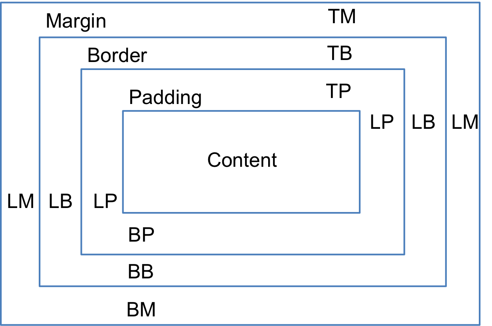
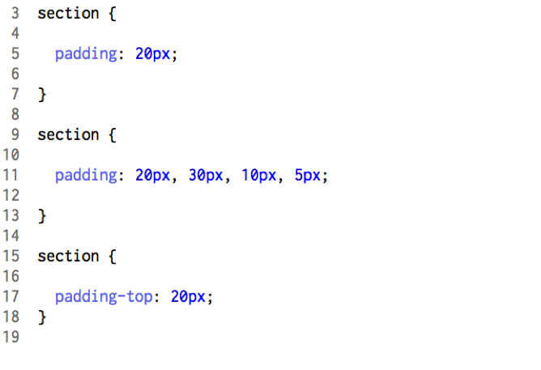

Recent Posts
Understanding the Difference Between Margin, Border, and Padding
Margin, border, and padding can be a confusing concept at first in CSS. Margin is the space around the element between the border of the element and other elements. The border is the edge of an element that is between the margin and the padding. The padding is the actual “stuff” in the box and is the space between the border and the content. See this diagram to better understand.

CSS can assign values to all 4 sides of an element all at once like this or to each in the order of top, right, bottom, left. It also has seperate key words like padding-top, padding-right, padding-bottom, and padding-left:
The same can be done with Margin and Border. It can be confusing at first, but visualizing the elements on the page and remembering which is which is the key to properly using these keywords.